Hide the code
[1] 9 1 2[1] 8 2 7Acknowledgments: see last slide
August 31, 2026
Last lecture we introduced:
Estimation: estimate the values of important parameters and have measures of uncertainty for estimates
Hypothesis testing: Test hypotheses about those parameters
Causal inference: Teasing apart causation from correlation
Equality: probability of being selected reflects its representation in the population
Independence: no influence of sampling one individual on other individuals that get sampled.
Taking random samples is hard and requires effort
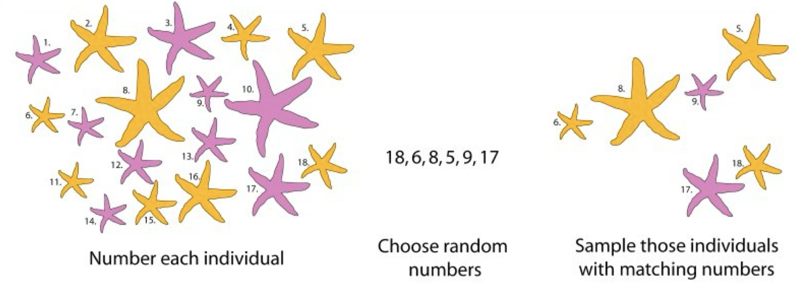
Try it in webr: https://webr.sh/.
Type this code at the bottom left, in the > prompt and then enter/return
Probability Distribution vs. Frequency Distribution
plot.one.dice.prob <- data.frame(outcome = c(1:6), probability = 1/6) |>
ggplot(aes(x = outcome, y = probability, fill = factor(outcome))) +
geom_bar(stat = "identity", show.legend = FALSE) + ggtitle("Probability Distribution",
subtitle = "Outcome of a fair die") + scale_x_continuous(breaks = 1:6) +
scale_y_continuous(expand = c(0, 0), limits = c(0, 0.32)) +
ylab("Expected probability") + theme(axis.ticks = element_blank())
df <- data.frame(Outcome = DieRoll(times = 6), NrRolls = 6)
one.roll <- ggplot(df, aes(x = Outcome, fill = factor(Outcome))) +
geom_bar(aes(y = after_stat(count)/sum(count)), show.legend = FALSE) +
ggtitle("Proportions Observed", subtitle = "Outcome of a fair die\n(n = 6 trials)") +
# scale_fill_manual(values = banff())+
scale_x_continuous(breaks = 1:12) + ylab(label = "Observed proportion") +
theme(axis.ticks = element_blank())
library(patchwork)
plot.one.dice.prob + one.roll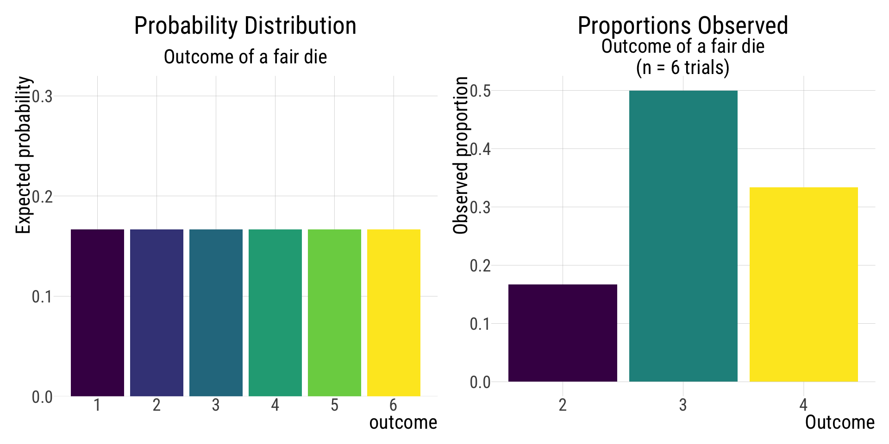
A random variable can take on many different values with different probabilities. Random variables are ways to map outcomes of random processes to numbers. – Khan Academy
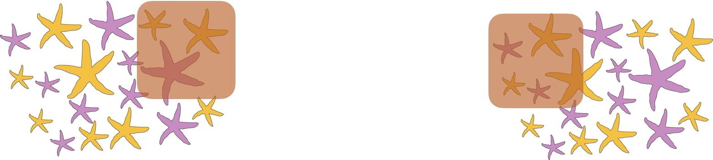
minimize sampling error (increase precision of estimates)
minimize sampling bias (increase accuracy of estimates)
Sampling error: Chance deviations between estimates and the truth due to chance/luck– even when you did NOTHING wrong!
The spread of estimates resulting from sampling error indicates the precision of an estimate.
The lower the sampling error, the higher the precision.
All else being equal, larger samples will have lower sampling error and higher precision than smaller samples.
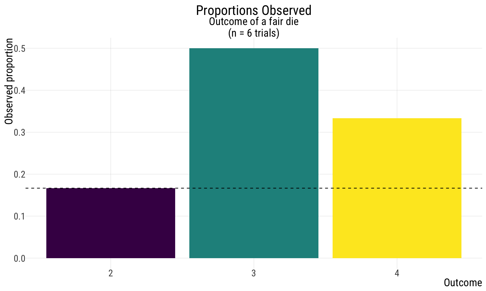
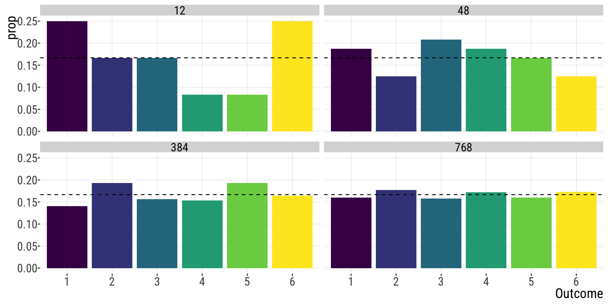
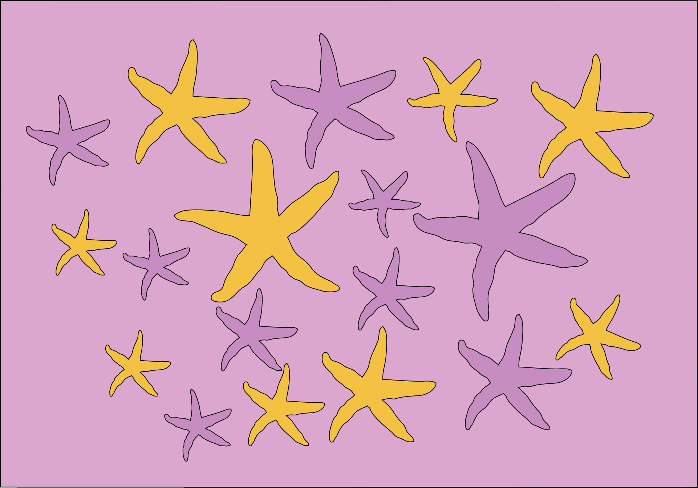
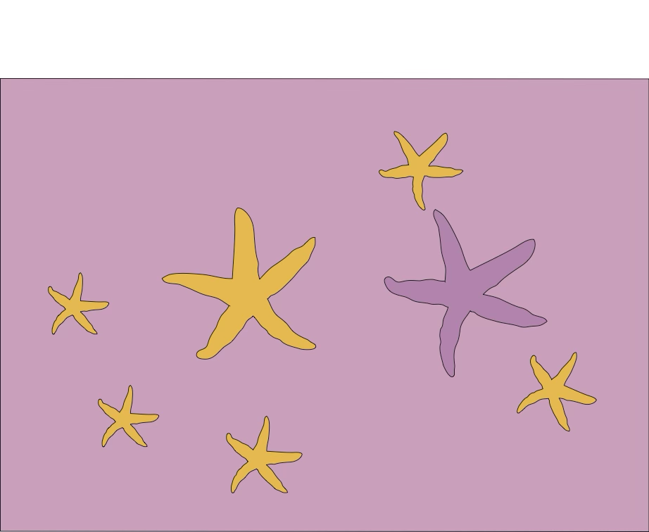
Sampling bias: Systematic difference between parameters & estimates.
Case study: Polls in the 1936 US Election.


2.4 million responses to 10 million questionnaires , sent to people from telephone books and club lists.
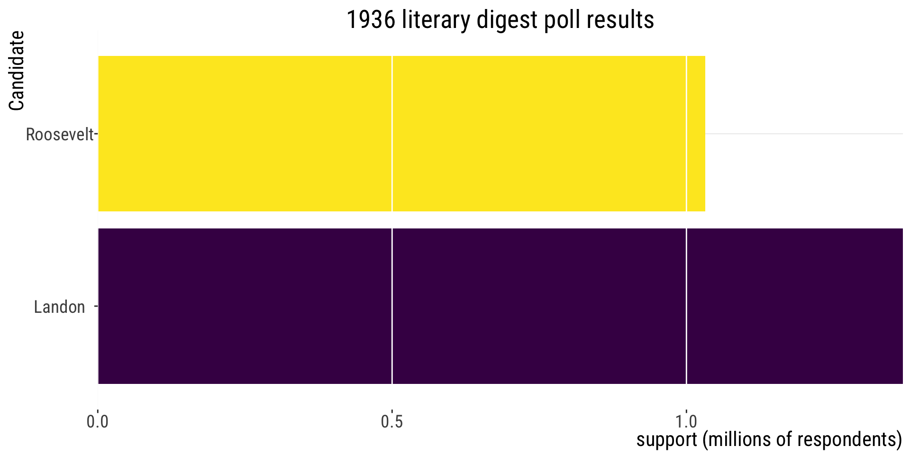
Figure made in R with code borrowed from Y. Brandvain
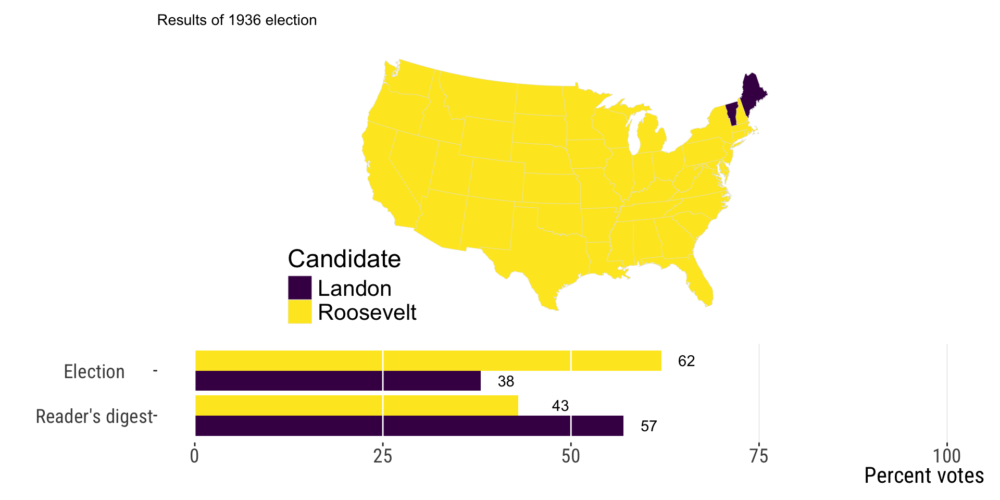
Figure made in R with code borrowed from Y. Brandvain.
What do you think happened?
A sample of convenience is a collection of individuals that happen to be available at the time
… usually one that is drawn from a source that is conveniently accessible to the researcher.
low generalizability. What is true for your sample might not reflect what is true for the population.
a sample is likely to be representative of the population only if it is randomly drawn from the population – the sample of convenience violates this assumption (and sometimes also the independence assumption)
in practice, you can only generalize findings to the subpopulation from which the sample was taken from.
A sample of convenience may be the best option researchers have (e.g. studies that extract data from national healthcare or insurance databases)
Note: It is rarely possible to draw a truly random sample from the population – but we must do our best.
“Occurs when individuals or groups in a study differ systematically from the population of interest leading to a systematic error in an association or outcome.” – Catalog of Bias [https://catalogofbias.org/biases/selection-bias/]
![[Blondie is standing on a podium behind a lectern with a microphone. She is standing under a hanging sign with large text. In front of the podium is an audience of five seated persons all with their hands raised above their heads. The audience includes two guys that look like Cueball, Hairbun, and two other persons with dark and blonde hair.] Sign: Statistics Conference 2022 Blondie: Raise your hand if you’re familiar with selection bias. Blondie: As you can see, it’s a term most people know...](https://imgs.xkcd.com/comics/selection_bias.png)
Volunteers for a study are likely to be different, on average, from the population. Also known as “self-selection” bias.
For example:
Sampling Bias
Sampling Error
Accuracy (on average gets the correct answer).
Precision (gives a similar answer repeatedly). If unbiased, those estimated are centered around the true value (parameter).
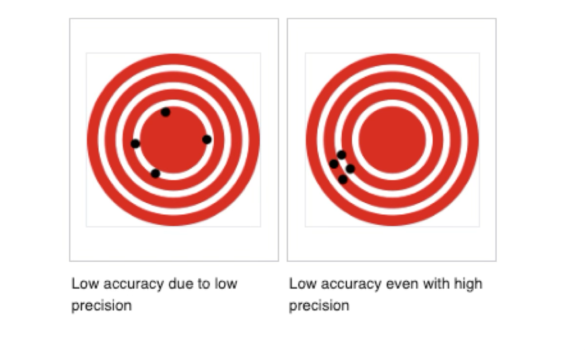
Image: Wikipedia Commons (public domain).
In this figure, the “X” in the middle is the population parameter. The circles are different estimates calculated from different samples taken from that population.
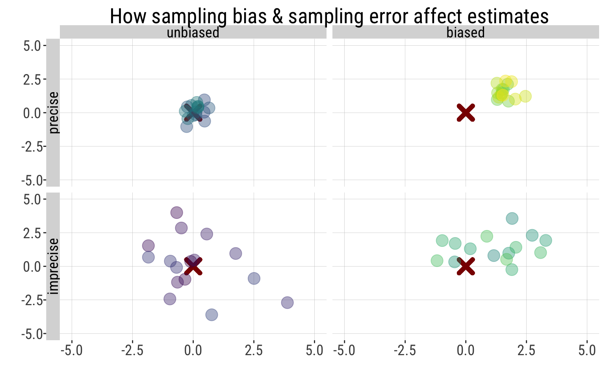
Figure made in R with code borrowed from Y. Brandvain
Yaniv Brandvain, Freeman & Company, and Michael Whitlock for some materials used in these slides.
B215